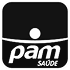

Diagnosticar
- Consultoria técnica em IAExpertise externa para destravar times
- Discovery e documentaçãoFormato pronto para uso com IA

Diagnóstico de código gerado por IA · Lughy
Sem compromisso de contratação.
Você usou uma ferramenta de IA (Lovable, Cursor, Replit, bolt.new) para construir seu MVP e nunca teve uma revisão técnica especializada do que foi gerado.
Você não sabe se o código gerado é seguro, nem se a plataforma protege como deveria os dados de clientes e terceiros que fazem login e cadastram suas informações nela.
Já percebeu comportamentos estranhos, bugs difíceis de rastrear ou partes do sistema que "ninguém entende direito como funcionam".
Sente que o código "funciona na demo", mas não tem certeza se resiste a mais usuários, mais dados ou mais carga.
Sem compromisso
Identifique falhas de segurança e dívida técnica antes que virem um problema caro de resolver.
Avaliação de arquitetura, qualidade de código e pontos de travamento, com rigor de revisão humana especializada.
Relatório com nome e identidade próprios, feito em cima do seu projeto, não um checklist genérico.
Sem compromisso
Confira segurança, arquitetura, dívida técnica e prontidão para escalar antes de tomar qualquer decisão.
Linha do tempo
O caminho que você está começando, a Lughy já percorreu. Isso é o que garante que a revisão do seu código não seja genérica: é feita por quem aplica IA no próprio desenvolvimento desde 2024.
2024
Começamos a usar IA para geração de código em projetos mais simples.
2024
Nos primeiros meses do Lovable, já fazíamos vibe coding. Foi ali que entendemos: qualidade e segurança exigiriam um agente de IA próprio.
2025
Com a evolução dos modelos, ampliamos o uso para todos os projetos, incluindo os mais complexos, apps e legados.
2025-26
Diversos projetos em produção usando 100% SDD (Spec-Driven Development), com qualidade comprovada e cobertura de testes.
Hoje
Todos os projetos são desenvolvidos com 100% SDD, seja web, app, legado ou complexo.
0
falhas de segurança registradas
< 1%
taxa de retrabalho
Nenhuma linha de código chega ao cliente sem revisão humana criteriosa
O que fazemos
Diagnosticar
Construir
Sustentar
Conectar
API oficial do WhatsApp · know-how comprovado
A Lughy entra no ponto onde você está: do zero ao fim, ou só na etapa em que o seu projeto travou.
Combinamos o desenvolvimento de software com IA + a expertise técnica do time da Lughy para revisar, com rigor humano especializado, o que já foi construído no seu projeto.



Depois que você se inscreve, o time comercial entra em contato pelo WhatsApp e pede acesso (ou uma explicação) do que foi construído com IA. A partir disso, um especialista da Lughy revisa o código com rigor técnico e monta um relatório com os riscos encontrados, a situação da arquitetura e um plano de ação priorizado. Sem material genérico, direto do seu contexto.
Não. O diagnóstico entrega uma análise de segurança, arquitetura e dívida técnica, além de um plano de ação priorizado. Uma eventual reescrita ou orçamento fechado de projeto exige um escopo já validado, algo que normalmente vem depois, com base no que o diagnóstico revela.
Não. O diagnóstico parte do que você já tem: o projeto construído com IA e as dúvidas que você carrega sobre ele. Você não precisa entender de código para participar: o relatório final é pensado para ser compreendido mesmo por quem não é técnico.
Não. Na Lughy, a IA acelera etapas do trabalho, mas toda análise e todo relatório passam por revisão de especialistas antes de chegar até você. O diagnóstico existe justamente para aplicar esse rigor humano especializado sobre o que já foi construído com IA.
Sim. As informações e o código compartilhados durante o diagnóstico são tratados com sigilo e seguem a LGPD. Nenhum dado do seu projeto é usado fora do escopo da análise entregue a você.
Não. O diagnóstico não tem compromisso de contratação. Ele existe para você entender exatamente onde seu projeto está exposto antes de decidir os próximos passos, com ou sem a Lughy.
Diagnóstico técnico
Preencha o formulário e solicite seu diagnóstico técnico: segurança, arquitetura, dívida técnica e plano de ação. Sem compromisso de contratação.